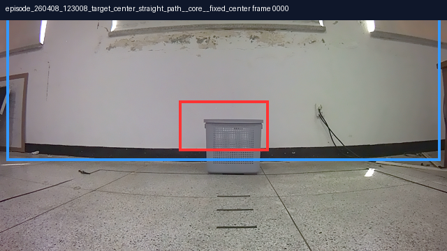

episode_260408_123008_target_center_straight_path__core__fixed_center / center_straight / frame 0
pred: caption / coarse=center / entity=caption:center
seed: coarse=center / has_bbox=true
the center of the image, with the white wall and the window in the background.